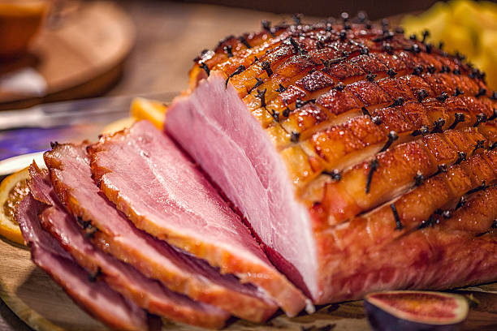

Glazed Ham

This whole ham recipe features a glaze that boasts three things: wonderful flavor, a gorgeous appearance, and a crispy, crackling crust you can hear across the room. This easy-to-make glaze has all those things in abundance.
Ingredients
- 3/4 cup water, or as needed
- 2 whole star anise
- 12 whole cloves, or more to taste
- 1 (7 pound) country-style ham
- 1 cup firmly packed light brown sugar
- 1/4 cup honey
- 2 tablespoons Dijon mustard
- 1 1/2 teaspoons freshly ground black pepper
- 1/2 teaspoon Worcestershire sauce
- 1/2 cup margarine, softened
- 1 pinch cayenne pepper
Steps
- Preheat the oven to 325 degrees F (165 degrees C).
- Prepare ham: Add water, star anise, and cloves to the bottom of a roasting pan. Place a roasting rack into the pan; place ham on the rack. Cut 1/4-inch-deep slashes, 1/2-inch apart, lengthwise and crosswise across the top of ham.
- Bake in the preheated oven for 20 minutes.
- While ham is baking, make glaze: Whisk together brown sugar, honey, mustard, vinegar, black pepper, Worcestershire sauce, and cayenne pepper in a medium bowl until thick and smooth.
- Brush glaze all over ham. Continue baking ham, brushing with glaze every 20 minutes, until glaze is deep golden and ham is heated through, about 2 hours 10 minutes. An instant-read thermometer inserted into the center of ham should read at least 145 degrees F (63 degrees C).
- Run a kitchen torch over ham until glaze is crispy and caramelized, 2 to 5 minutes.